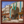

使用方法
使用时，通过以下格式键入理念名称，即可引用通用国家理念：{{Group NI|国家理念名}}；引用中英文名称均可。
键入{{Group NI|国家理念名|collapse=yes}}可引用折叠的通用国家理念。
下表列出目前可用的所有通用国家理念。
| 英文 | 中文 | 适用国家 |
|---|---|---|
| Generic | 通用 | 未指定任何国家理念的国家。 |
| Aboriginal | 澳洲原住民 | 所有 |
| Aimaran | 艾马拉 | 所有 |
| American Southwest | 西南原住民 | 所有主流文化属于 |
| Anatolian | 安纳托利亚 | 所有 |
| Andean | 安第斯 | 所有 安第斯科技组的国家（主流文化为艾马拉的国家除外）。 |
| Arabian | 阿拉伯 | 所有 |
| Arawak | 阿拉瓦克 | 所有 |
| Barbary Corsair | 巴巴里海盗 | 所有 创建缩略图出错：文件丢失 得土安。
|
| Bavarian | 巴伐利亚 | 所有 |
| Bengali | 孟加拉 | 所有 |
| Berber | 柏柏尔 | 所有 |
| Bornean | 婆罗洲 | 所有 |
| Caspian | 里海 | 所有 |
| California Native | 加利福尼亚原住民 | 所有主流文化是 |
| Catalan | 加泰罗尼亚 | 仅适用于 |
| Caucasian | 高加索 | 所有属于 |
| Central Algonquian | 中阿尔冈昆 | 主流文化为 |
| Champa | 占婆 | 所有主流文化为 |
| Chinese | 中华 | 所有 |
| Client states | 仆从国 | 仅适用于 仆从国。 |
| Colonial | 殖民领 | 仅适用于 殖民领。 |
| Cossack | 哥萨克 | 所有政体为 |
| Daimyo | 大名 | 所有政体为 |
| Dai Viet | 大越 | 仅适用于 |
| Deccani Sultanate | 德干苏丹国 | 所有 |
| Divine | 神权国 | 仅适用于 |
| Eastern Algonquian | 东阿尔冈昆 | 主流文化为 |
| Evenk | 鄂温克 | 所有 |
| Federation / Generic Federation | 部落联盟 | |
| Fijian | 斐济 | 仅用于 |
| French Ducal | 法兰西公国 | 所有 |
| Garjati | 迦贾德 | 以 |
| German | 日耳曼 | 所有 |
| Gond | 贡德 | 所有主流文化为 |
| Greek | 希腊 | 所有主流文化为 |
| Gujarati Princedom | 古吉拉特王公国 | 所有主流文化为 |
| Hausa | 豪萨 | 仅适用于 |
| Hawaiian | 夏威夷 | 仅用于 |
| Highlander | 苏格兰高地 | 所有主流文化为 |
| Horde | 游牧 | 所有没有独有理念的 |
| Horn of African | 非洲之角 | 除索马里、提格雷文化及 |
| Indian Sultanate | 印度苏丹国 | 所有文化组为 |
| Interlacustrine / Great Lakes | 非洲大湖区 | 所有属于 |
| Italian | 意大利 | 所有首都在意大利（地区）的 |
| Iwi | 伊维 | 所有主流文化为 |
| Javan | 爪哇 | 所有 |
| Jurchen | 女真 | 仅适用于 |
| Kongo | 刚果 | 仅适用于 |
| Kongolese | 刚果人 | 所有属于 |
| Kurdish | 库尔德 | 所有主流文化为 |
| Laotian | 老挝 | 所有主流文化为 |
| Luzon | 吕宋 | 仅适用于 |
| Malabari | 马拉巴尔 | 所有主流文化为 |
| Malagasy | 马尔加什 | 所有主流文化为 |
| Malayan Sultanate | 马来亚苏丹国 | 所有国教为伊斯兰教、主流文化为 |
| Maratha | 马拉塔 | 仅适用于 |
| Mayan | 玛雅 | 所有宗教为 |
| Mesoamerican | 中美洲 | 仅适用于宗教为 |
| Mindanao | 棉兰老 | 仅用于 |
| Moluccan | 摩鹿加 | 所有主流文化为 |
| Mossi | 莫西 | 所有主流文化为 |
| Muskogean Federation | 马斯科吉联盟 | 用于主流文化为 |
| Native | 原住民 | 所有政体为 |
| Nepalese Princedom | 尼泊尔王公国 | 所有主流文化为 |
| Norse | 诺斯 | 所有 |
| Northeastern Woodlands | 东北林地原住民 | 所有主流文化属于 |
| North Western Native | 西北原住民 | 所有主流文化为 |
| Nubian | 努比亚 | 所有主流文化为 |
| Piratical | 海盗 | 仅适用于拥有 |
| Plain Native | 平原原住民 | 所有主流文化属于 |
| Pomeranian | 波美拉尼亚 | 所有 |
| Pueblo | 普韦布洛 | 仅适用于 |
| Rajput | 拉杰普特 | 所有主流文化为 |
| Ruthenian | 鲁塞尼亚 | 所有 |
| Shan | 掸邦 | 所有主流文化为 |
| Siberian | 西伯利亚 | 仅适用于政体为 |
| Silesian | 西里西亚 | 仅适用于 |
| Siouan Federation | 苏族联盟 | 用于主流文化为 |
| Somali | 索马里 | 所有主流文化为 |
| Southeastern Woodlands | 东南林地原住民 | 所有主流文化属于 |
| South Indian | 南印度 | 所有属于 |
| Sulawesi | 苏拉威西 | 所有主流文化为 |
| Sumatran | 苏门答腊 | 所有主流文化为 |
| Swabian City-State | 施瓦本城邦 | 所有 |
| Swahili | 斯瓦希里 | 所有主流文化为 |
| Telugu | 泰卢固 | 所有主流文化为 |
| Tibetan | 吐蕃 | 适用于 |
| Trading City | 贸易城市 | 所有拥有  贸易城市政府改革的国家。 |
| Tupi | 图皮 | 所有主流文化为 |
| Vindhyan | 温迪亚 | 仅适用于 |
| West African | 西非 | 仅适用于 |
| Zambezi | 赞比西 | 所有主流文化为 |